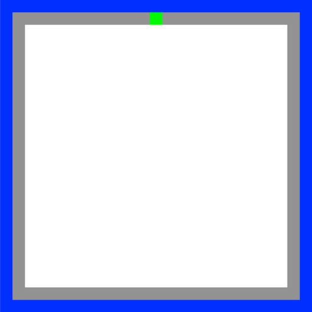
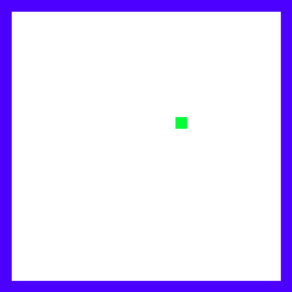
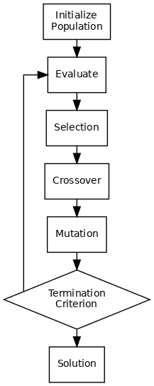
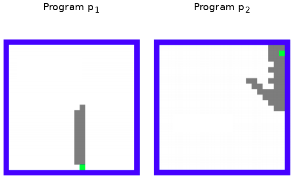
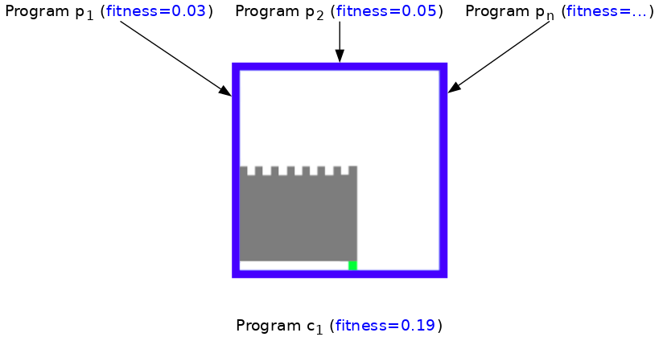

Kunstmatige intelligentie#
Kunstmatige intelligentie heeft een lange geschiedenis; het is zelfs zo dat het vakgebied van kunstmatige intelligentie (ten dele) voortkomt uit het geloof dat door programma’s te schrijven die goed zijn in het spelen van strategische spellen we ook intelligentie op het niveau van de mens zouden kunnen programmeren.
Het is gebleken dat dat geloof niet waar was: menselijke intelligentie gaat fundamenteel over iets anders dan het strategisch nadenken over op regels gebaseerde contexten zoals spellen.
De toepassingen van spel-AI zijn echter breder dan alleen spellen. Technieken die de beste uitkomst vinden door te zoeken door mogelijke situaties (zoals zetten in een spel) behoren tot de kern van AI en kunnen toegepast worden in veel soorten beslissingsproblemen:
Robots die moeten bepalen welke actie of beweging ze zullen doen.
Beslissingssytemen die complexe interacties tussen kunstmatige systemen (en, soms, mensen…) modelleren of simuleren.
Adaptieve systemen die zich aanpassen aan de handelingen van de gebruiker, bijvoorbeeld om vaardigheden op een nieuw gebied te oefenen (onderwijs en training).
Min-max#
Een spelletje boter-kaas-eieren en “X” is aan de beurt.
Voor deze situatie is de keuze snel gemaakt om te winnen.
Wat als “O” aan de beurt is? Dan zijn er twee opties.
De linker optie laat de weg vrij voor ‘X’ om te winnen, de rechter optie zorgt voor gelijk spel. Gelijk spel is beter dan verliezen en dus zal de AI de rechter optie moeten kiezen. In dit geval kijkt de AI maar 1 stap diep. Het werkt, maar het maakt de AI nog niet echt slim. Hoe meer stappen de AI vooruit kijkt hoe beter het zal spelen.
In de vierde laag zijn er nu veel opties open voor “X” om het spel te winnen, maar het is nu de beurt van “O”om een zet te doen. De AI zal moeten voorspellen welke zat “O” zal maken in elke van deze situaties. De AI gaat er vanuit dat “O” de perfecte speler is en in de weg gaat zitten om te winnen. Als “X” aan de beurt is probbeert het zijn eigen kansen te maximaliseren en zodra “O” aan de beurt is probeert het juist de kansen van “X” te minimaliseren. Deze strategie wordt min-max genoemd. De AI voorspelt wat de move van “O” kan zijn door te kijken welke move speler “X” het meest in de weg zit.
In elke laag van de boom zal “X” kiezen wat het meeste oplevert, en “O” juist het minst. Afhankelijke van welke laag in de boom wordt er of de minimale waarde gekozen van alle opties, of juist de hoogste waarde van alle opties.

Deze min-max strategie is niet alleen bruikbaar voor boter-kaas-en-eieren. Het is voor vele andere denk spellen bruikbaar, zoals vier op een rij, dammen en schaken. Deze methode werd bijvoorbeeld gebruikt voor de Deep Blue, de eerste computer dat de schaakmeester Gerry Kasparoc versloeg in 1997.
Het heeft wel zijn limieten. Het doorzoeken van een min-max tree kost tijd en hoe meer zetten er mogelijk zijn hoe groter de boom wordt. In boter-kaas-en-eieren zijn er maar 9 vakjes bij de eerst zet en dat worden er steeds minder. Ook schaken en dammen hebben maar een beperkt aantal opties.
Het chinese spel Go heeft veel meer opties. Het is een bord van 100 vakjes waar de een speler steen kan neerleggen. Het doel is om de stenen van de tegenstander in te sluiten.
De eerst zet alleen al levert 100 opties op. vervolgens heeft speler twee 99 opties om een steen neer te leggen. De derde laag van de boom heeft dan al \(100 * 99 = 9900\) takken. Dit vraagt om een andere strategie.
Genetische algoritmen#

De cirkel is nu rond, we begonnen met Picobot en eindigen ermee!
Picobot#


0 xxxx -> N 0
0 Nxxx -> W 0
0 NxWx -> S 0
0 xxWx -> S 0
0 xxWS -> E 0
0 xxxS -> E 0
0 xExS -> N 0
0 xExx -> N 0
0 NExx -> S 1
1 xxxx -> S 1
1 Nxxx -> E 1
1 NxWx -> E 1
1 xxWx -> N 1
1 xxWS -> N 1
1 xxxS -> W 1
1 xExS -> W 1
1 xExx -> S 1
1 NExx -> W 0
Huidige staat |
Omgeving |
Stap |
Richting |
Nieuwe staat |
|---|---|---|---|---|
|
|
|
|
|
De evolutie van Picobot#
Een voorbeeld van een een genetisch algoritme voor het optimaliseren van
moeilijk te beschrijven functies
met behulp van eenvoudig op te delen oplossingen

Evolutie#
Begin met een populatie van ~200 random Picobot programma’s

Fitness#
Bepaal per Picobot programma de dekking als waarde tussen 0 en 1

Combineren#
Paar (crossover) en muteer de meest fitte 10-20% programma’s en begin weer met ~200 random Picobot programma’s

Herhalen#
Herhaal dit “survival of the fittest” proces voor meerdere generaties tot een meest optimale fit is gevonden!